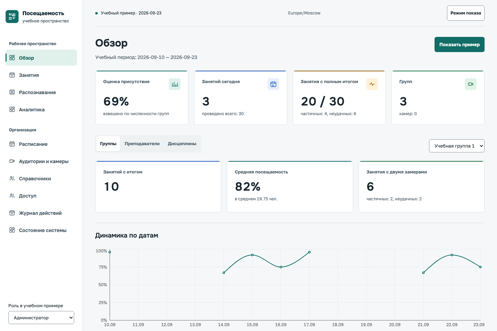
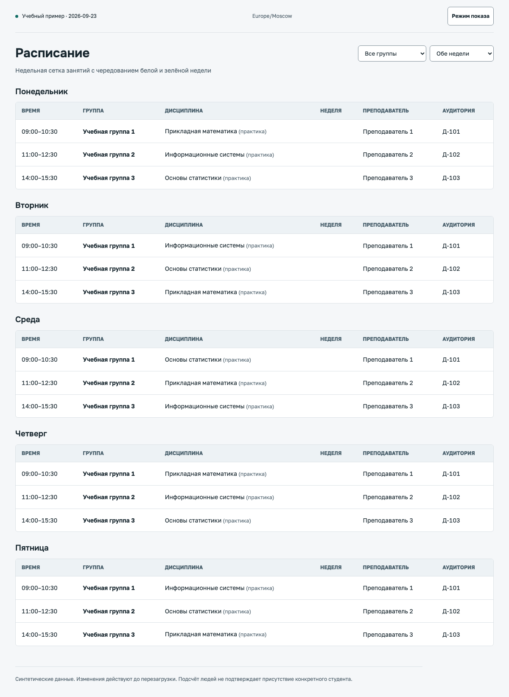
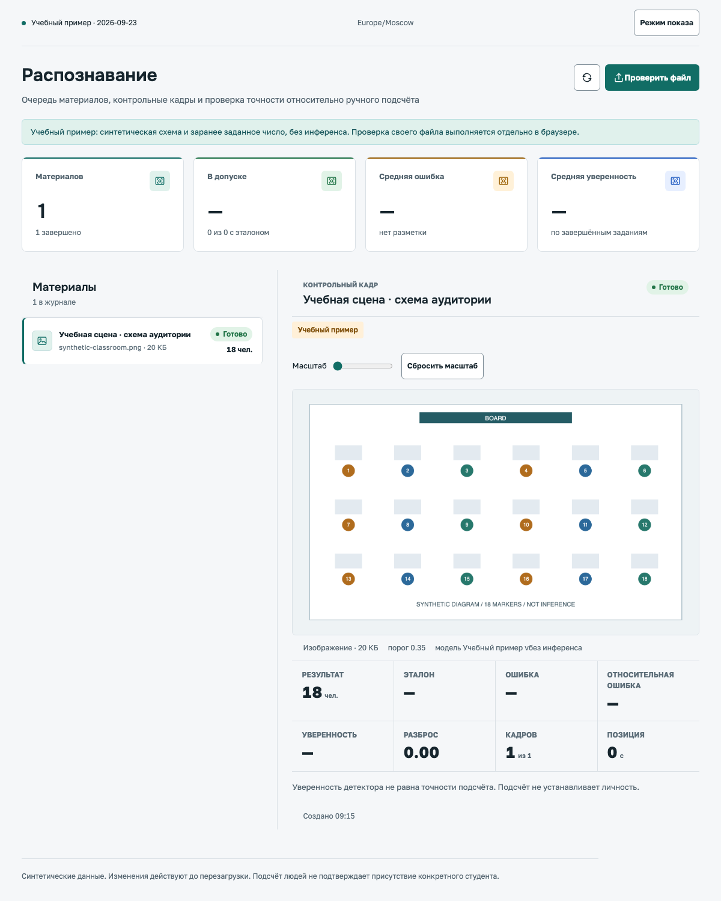
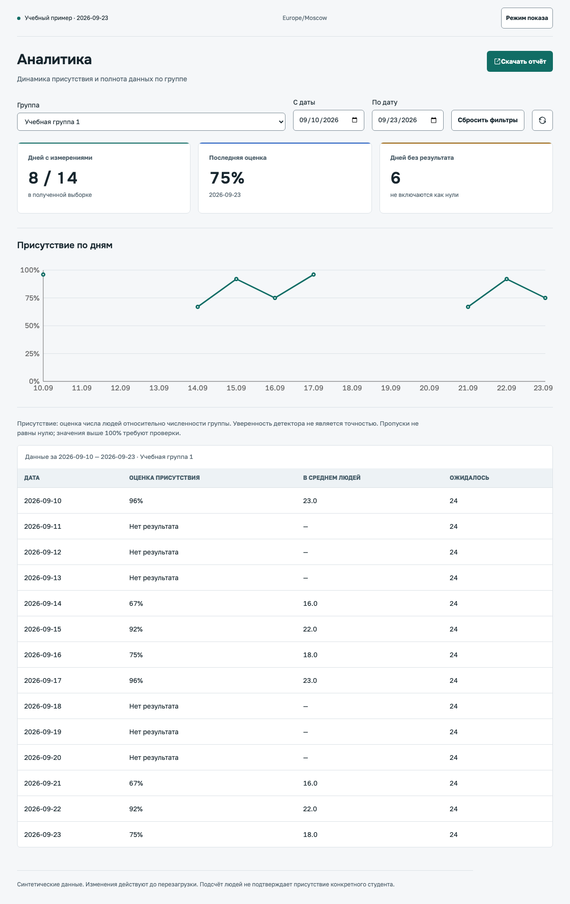

Обзор проекта · 01:28
От расписания и видео
до замеров и отчёта.

01 / Исходные данные
Группы, преподаватели,
аудитории и время.
Материал для подсчёта.
Камеры не обязательны.
Сначала проверка импорта,
затем запись в БД.

02 / Серверная обработка
POST /api/v1/recognition/uploads → 202 Accepted. Задание принято, результат ещё не готов.
03 / Recognition
Готовые веса.
Только класс person.
Итог по выбранным кадрам.
Отдельно: p75 и максимум.

04 / Результат
После начала занятия
и перед окончанием.
История, графики,
полнота данных и CSV.
Оценка присутствия,
не точность детектора.

05 / Режимы работы
Свой файл на устройстве
Полный рабочий контур
Опциональный профиль
Статическое демо показывает интерфейс. Оно не заменяет серверный стенд.
06 / Репозиторий
Страницы, формы, графики и API-клиент
API, доступ, расписание, замеры и агрегация
Очередь, модель, выбор кадров и метрики
RTSP, FFmpeg и загрузка видео в хранилище
Запуск, проверки, резервные копии и восстановление
Следующий шаг
Перед рабочим запуском: закрыть проверки безопасности и лицензий, подготовить сервер и проверить качество на размеченной выборке.
В этом видео показан интерфейс с учебными данными. Схемы объясняют серверный код.